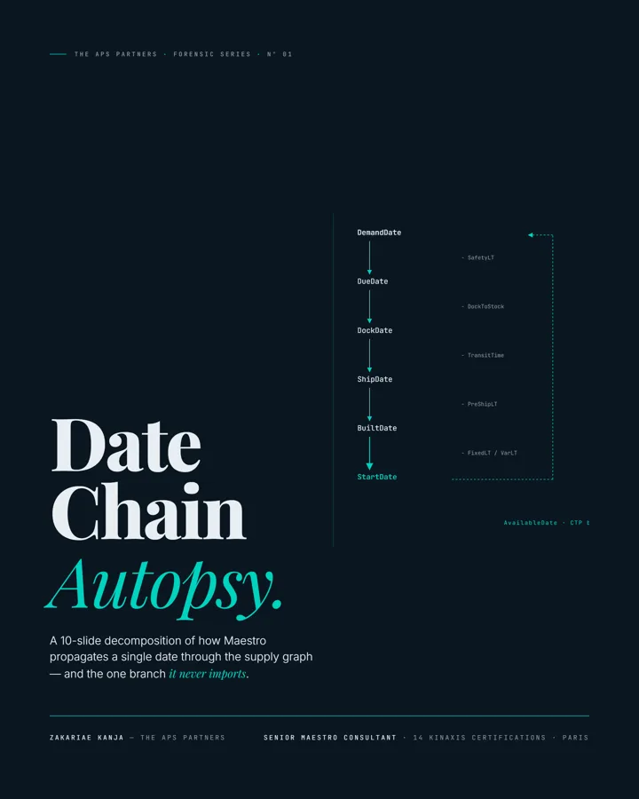
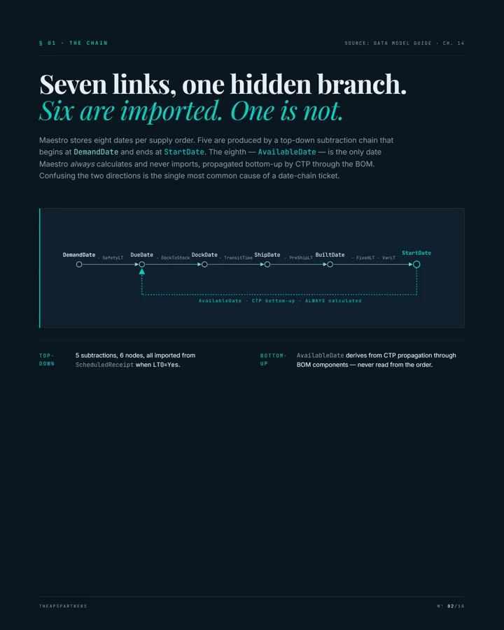
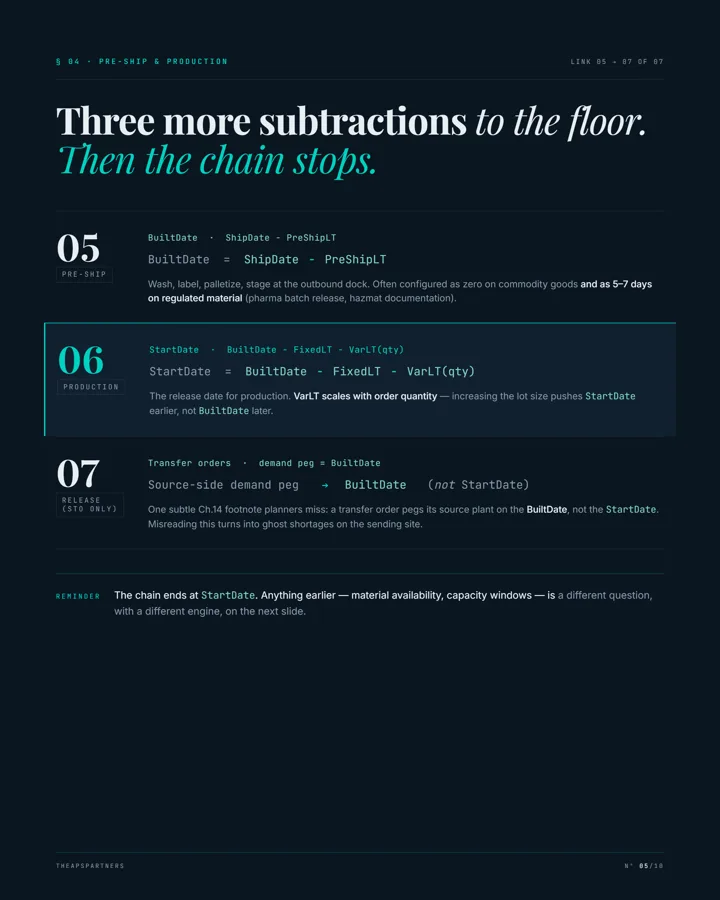
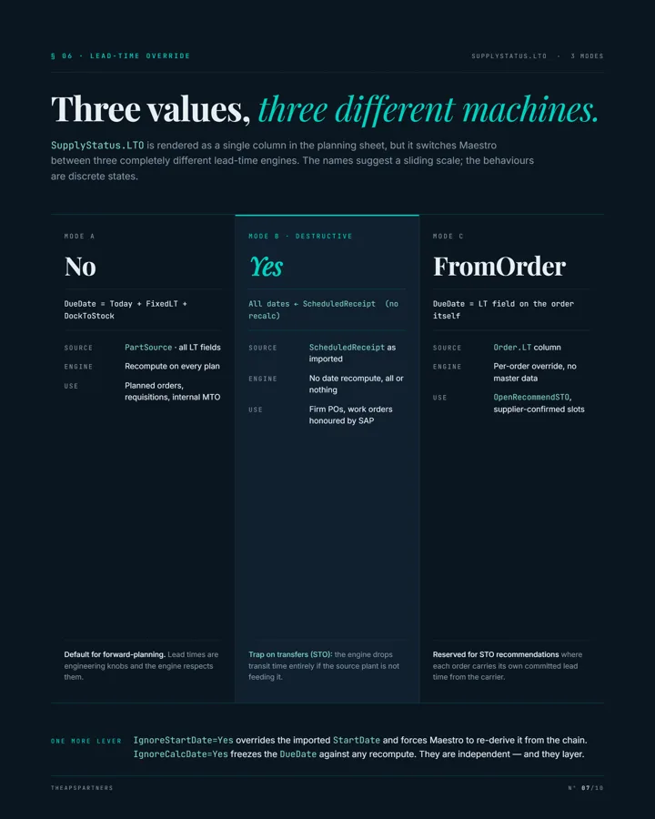
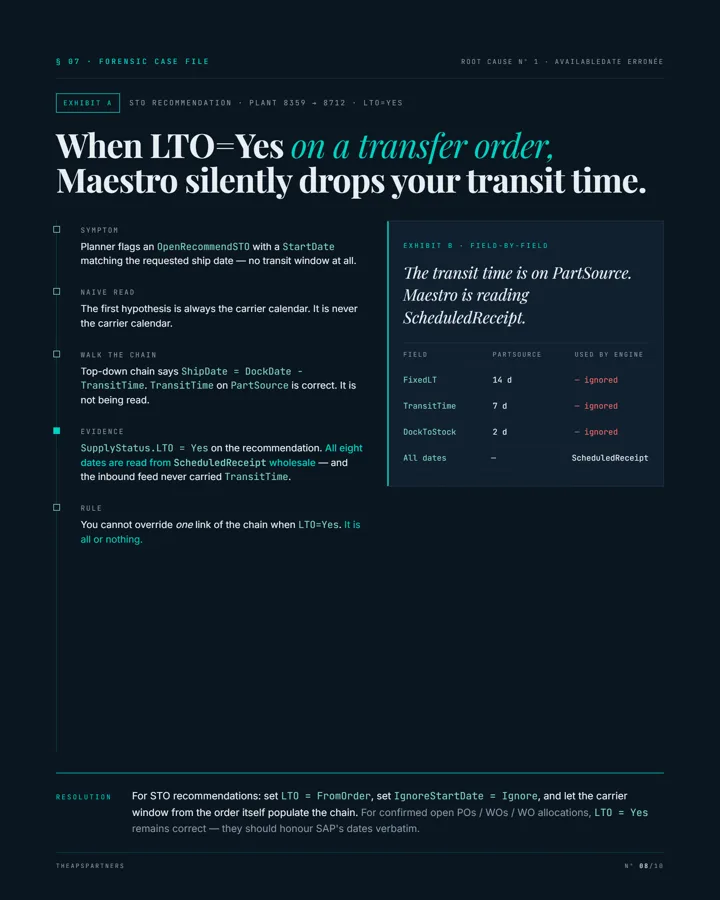
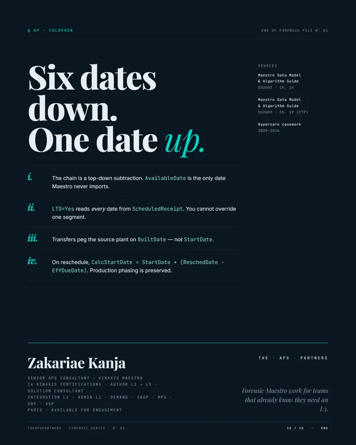

A plan nobody trusts is expensive: planners firefighting instead of planning, weeks of vendor back-and-forth that end in “works as designed”, S&OP meetings that argue about the numbers instead of deciding. We find out why the numbers are wrong — and put it in writing.
When nobody can say why — not the business, not the integration team, not the vendor — someone has to read every layer from SAP to the workbook and come back with an answer that holds.
Most consultants ship fixes. This practice ships verdicts — by-design or defect, proven in hours, documented so the client keeps a better-understood solution than before the incident.
Every anomaly starts as a falsifiable hypothesis against the existing setup — never a rebuild reflex. The cheapest fix is the one you prove you don't need.
Maestro alone never tells the full story. The file is only closed once SAP (MD04, MM03, EKET/EKPO), the BW extractors, the middleware mappings and the Maestro data model agree on one narrative.
A wrong escalation costs weeks of vendor ping-pong. Written proof — the spec paragraph, the field trace, the reproducible case — closes files in days, not quarters.
Each root cause is codified into an anonymised, reusable diagnostic pattern. The practice compounds; the client's documentation compounds with it.
Production incidents on live Maestro instances: wrong dates, ghost supplies, broken netting, S&OP numbers nobody trusts. Triage, diagnosis, verdict, fix — with the written proof attached.
Dual-source landscapes — ECC/S4 + BW → middleware → data hub → Maestro — where the bug lives between systems. Fluent in extractors, delta loads, mapping specs and the Maestro input tables they feed.
De-risking migrations from end-of-life planning systems. The business logic hidden in the legacy — filters, freezes, horizons, classifications — is mapped before it is lost, then redesigned properly in Maestro.
Author L3 work: workbook and composite design, automation chains, performance, peer-review standards, Center of Excellence practices — solutions built to be maintained, not just demoed.
A bounded, fixed-scope audit of your Maestro solution — data model, integration mappings, workbook and automation design, planning parameters — against Kinaxis best practices and 9 years of production casework. You receive a written review report: findings ranked by risk, by-design vs defect calls, and a prioritised fix list your own team can execute.
One burning scope (e.g. supply planning dates, CTP, one integration flow). Report + restitution call.
End-to-end review across data model, integration, authoring and parameters. Report + prioritised roadmap + restitution workshop.
The Standard review, then 90 days of on-call support while your team implements the fix list — questions answered with written traces.
Every figure traces to a real, documented case — anonymised. Client names never appear in this practice's material; the mechanisms, tables and field traces stay exact, because that is where the value lives.






Nine years across two APS generations — legacy DSCP and Kinaxis Maestro — with the SAP literacy to read the whole chain, from extractor to decision.
You describe the symptom — by form, email or a booked call. You get a first written hypothesis within one business day, then a short diagnostic sprint before any longer commitment. No discovery workshops before there is a verdict on the table.
Yes. Pick a slot below and send the invite — it lands directly in the practice's calendar (contact@theapspartners.com). Thirty minutes, no deck, bring the workbook.
Remote-first from Paris, on EU business hours. On-site for the moments where presence changes the outcome — kick-offs, war rooms, migration workshops.
Kinaxis Maestro end-to-end (authoring, integration, functional, administration), plus the SAP side of the landscape — ECC/S4, BW extractors, middleware mappings — and legacy DSCP estates heading for migration.
Client names never appear in published material. Everything in the Forensic Series is anonymised — sectors instead of companies, descriptors instead of part numbers — while the mechanisms stay exact. The same discipline applies to your file.
Two models. The Maestro Design Review is a fixed-price package — €6,500 (Express, 3 days), €11,000 (Standard, 5 days) or €19,500 (Plus, with a 90-day retainer) — with a written report as the deliverable. Everything else (incident diagnosis, hypercare, migration lead) runs on a day-rate, scoped and bounded per engagement: you pay for a verdict, not for time on site.
Describe the symptom, ask a question, or book a call directly — every channel below reaches the founder, not an inbox queue. First reply within one business day.
Pick a slot (Paris time). The invite is sent to the practice's calendar — you keep a copy in yours.